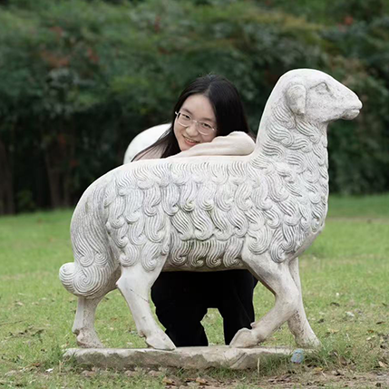

分层多样曲面构件空间组合
UHPC结构建筑BIM智能化设计建造研究
课题介绍
本课题为整合“数据化建筑设计+装配式建造+节能优化+景观设计”研究型实践型课题，以国家 “中国式现代化”“高质量与绿色转型发展” “碳中和碳达峰”“产学研融合”等战略方针为导向， 强化学生理解和应用建筑数据化设计与智能建造的能力，支撑高水平创新性新型建筑学人才培养目标。
以“2024生物多样性建筑设计建造挑战赛”为契机,项目场地选址位于张家口市康保县湿地公园。课题任务主要包括曲面装配式建筑设计、建造设计、性能优化、景观与室内设计四个部分。
课题时间
2024年10月 - 2025年1月
指导教师团队
指导教师： 张宏、张蕾、朱海鹏、朱爱宇、伊若勒泰、张弦、周欣
课程助教： 叶红雨、罗申、张军军、孙旻杰、黑赏罡、周超等
企业教师： 阳知乾高工、胡勇高工、伍雁华高工、张大展等
设计概念
本设计以创新的巢状结构单元为核心，巧妙运用复制、旋转、拼合手法，在张家口市康保县湿地公园这一寒冷地区，创造出一个既稳定又富于变化的空间体系。设计灵感源自六边形雪花，寓意自然与科技的完美融合，与湿地环境和谐共生，展现出独特的科技感与诗意。
施工方面，采用了模块化预知装配式技术，结合超高性能混凝土（UHPC）材料，实现了高预制率和迅速施工的目标。这种施工方法不仅提高了建筑质量和施工效率，还适应寒冷地区的气候条件。同时，材料选择注重保温隔热性能，确保建筑在极端气候下的稳定性和舒适度。
设计面向未来，空间布局灵活多变，满足游客多样化的体验需求。通过精确几何计算与结构设计，巢状单元紧密拼合，形成稳定且层次丰富的空间。此外，设计还充分考虑了未来功能拓展的可能性，致力于打造一个绿色、环保、节能的建筑典范，为康保县湿地公园的长期发展注入新的活力，也为寒冷地区的建筑设计提供了有益的参考和借鉴。
团队成员：
-
陈泽昕
方案设计，结构优化，平面设计，剖面设计，建造过程模拟 -

沈冰珏
HTML5设计，构件分件，构件运输，效果图渲染，产品化设计